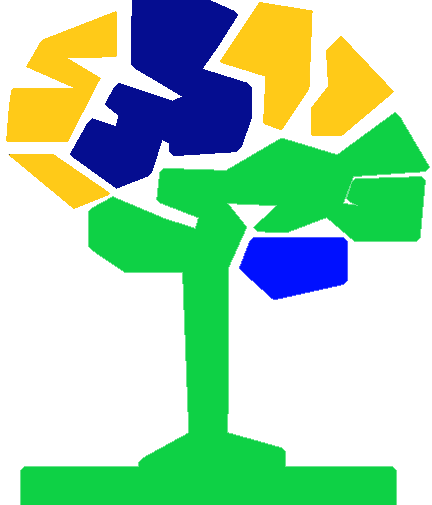
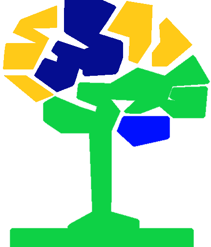

|  Conhecimentos
|  Conhecimentos
* O que são?
Do latim cognoscere, “conhecer” ou “saber” ou também conhecida do latim como scientia "ciência" onde se adquire uma habilidade através das faces da inteligência
forma disciplinar ou multidisciplinar dos saberes Naturais, Facultos, e Tecnicos, que possibilitam certificações sociais e novas habilidades pessoais e interpessoais.
* Escopo dos Conhecimentos
* Bibliografias